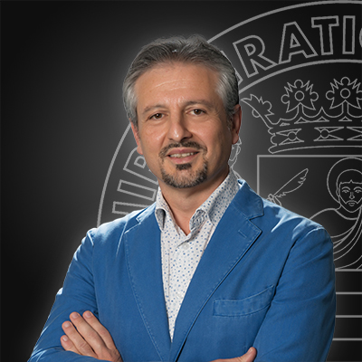

Organizers
Bernardo Breve is an Assistant Professor at the Department of Electrical Engineering and Information Technologies of the University of Naples Federico II. He received his M.Sc. (cum laude) and Ph.D. in Computer Science from the University of Salerno in 2019 and 2023, respectively. In 2024, he has conducted research visits at the Department of Mathematics and Computer Science at the Eindhoven University of Technology. He regularly serves as a reviewer for many international journals and has been involved in conference committees. His research interests include artificial intelligence, data imputation, natural language processing, visual languages, and human-computer interaction, with a focus on usable security and privacy.
Loredana Caruccio is an Associate Professor at the Computer Science Department of the University of Salerno. She completed her Ph.D. in Management & Information Technology in 2018 and served as a postdoctoral fellow and tenure-track Assistant Professor. She has conducted research at the Hasso Plattner Institute and LIRIS lab in France. She has served in various roles including General Chair of EDBT/ICDT 2024 and Program co-Chair of DMSVIVA and SEKE. She is currently vice co-Chair of the IEEE Big Data Conference. Her interests include Data Science, AI, and End User Development.
Giuseppe Polese is a Full Professor at the Department of Computer Science at the University of Salerno. He received his laurea cum laude in Computer Science from the University of Salerno in 1989, a Master in Computer Science from the University of Pittsburgh in 1994, and a Ph.D. from the Consortium of Universities of Naples (Federico II), Salerno, and Catania in 1998. He directs the "Data Science & AI Systems" Lab and coordinates the "Data Science & Machine Learning" track of the Master in Computer Science. His research interests focus on Data Science and Machine Learning.